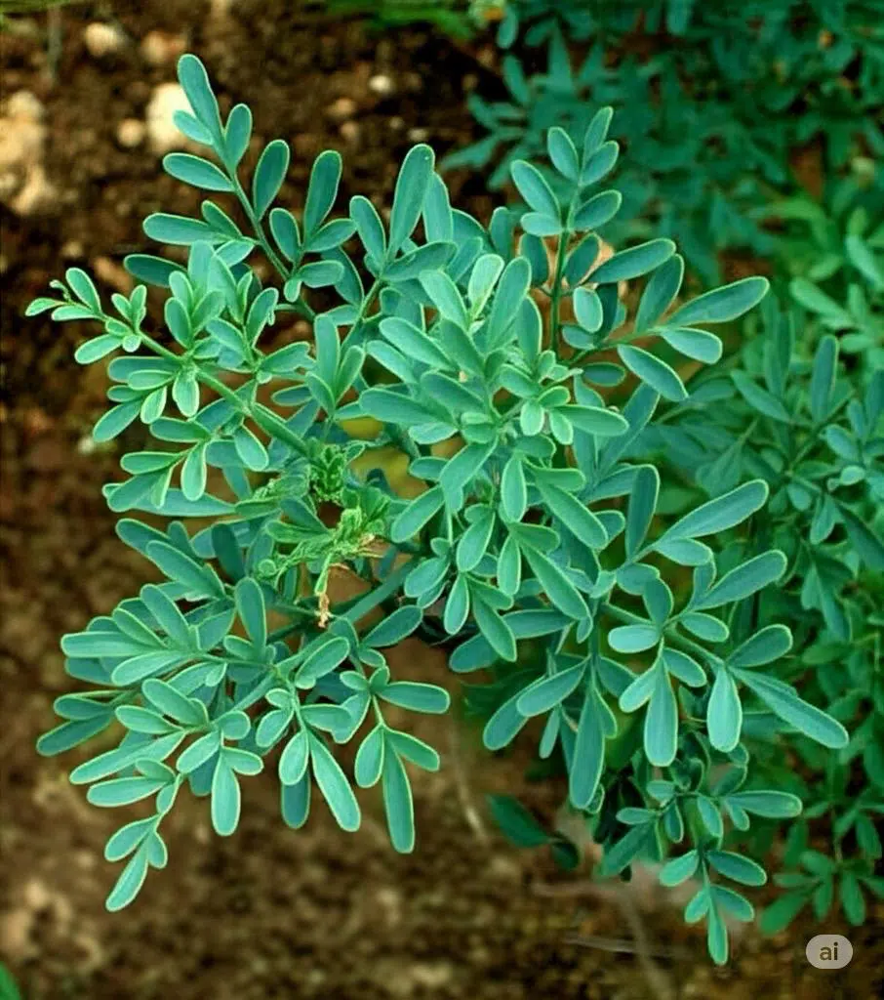

Ayuntamiento de Senés
JARDIN BOTANICO DE ESPECIES AUTOCTONAS DE SENES

Ruta graveolens

La ruda (Ruta graveolens) es un arbusto perenne aromático típico del ecosistema mediterráneo, ampliamente distribuido en zonas secas, soleadas y de suelos pobres o calizos. Presenta un porte leñoso y muy ramificado, pudiendo alcanzar hasta 1 metro de altura en condiciones favorables.
Sus hojas son compuestas, profundamente divididas y persistentes, de color verde azulado en el haz y más claro en el envés, lo que le permite reducir la pérdida de agua y adaptarse a climas áridos. Sus flores, generalmente de color amarillo, son pequeñas pero muy abundantes y tienen una gran importancia ecológica al atraer a numerosos polinizadores.
La ruda es una especie característica de la región mediterránea, donde crece de forma natural en zonas secas, soleadas y con escasa humedad. Se adapta especialmente bien a suelos pobres, pedregosos y calizos, siendo muy frecuente en laderas, monte bajo y terrenos alterados. Su resistencia a la sequía y a las altas temperaturas la convierte en una planta habitual en ecosistemas semiáridos como los del sureste peninsular.
La ruda posee numerosas propiedades beneficiosas ampliamente reconocidas desde la antigüedad. Entre ellas destacan sus efectos digestivos, antiespasmódicos y estimulantes. Tradicionalmente se ha utilizado para mejorar la circulación sanguínea, aliviar molestias digestivas y como planta medicinal en distintos preparados naturales.
La ruda ha tenido un fuerte simbolismo a lo largo de la historia en las culturas mediterráneas. Se ha asociado con la protección, la purificación y la buena suerte. En muchas tradiciones populares, se utilizaba en rituales y celebraciones como símbolo de defensa frente a influencias negativas.
En Senés, la ruda se utilizaba para proteger a los cerdos de enfermedades producidas por virus. se colgaban en los corrales, llamadas zaurdas. tambien se utilizaba para las personas por sus propiedades para el aparato circulatorio y digestivo y genital femenino. Las emberazadas no las tomaban bajo ningún concepto. Tambien se utilizaba para reducir la inflamación de enfermedades reumáticas.
La ruda puede florecer durante gran parte del año en climas mediterráneos suaves, aunque su periodo principal de floración se concentra entre primavera y verano. Sus flores, de tonalidad amarilla, aparecen en abundancia y constituyen una importante fuente de néctar para insectos polinizadores.
La ruda es una de las plantas aromáticas más antiguamente utilizadas por el ser humano, con referencias documentadas desde la Antigüedad. Su uso ha estado ligado tanto a la medicina tradicional como a prácticas simbólicas en diferentes culturas.
Además, es una planta muy valorada en la cultura mediterránea por su intenso aroma y su significado protector, siendo utilizada durante siglos en hogares y rituales populares.